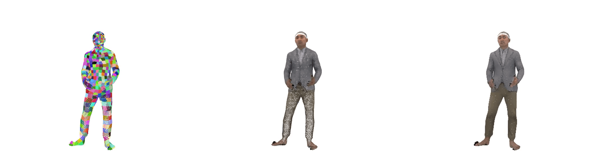
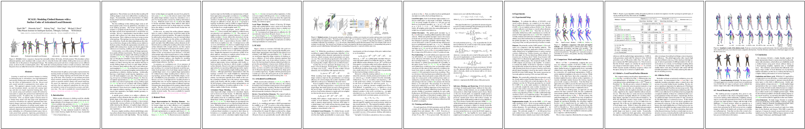

SCALE: Modeling Clothed Humans with a
Surface Codec of Articulated Local Elements
Abstract
Learning to model and reconstruct humans in clothing is challenging due to articulation, non-rigid deformation, and varying clothing types and topologies. To enable learning, the choice of representation is the key. Recent work uses neural networks to parameterize local surface elements. This approach captures locally coherent geometry and non-planar details, can deal with varying topology, and does not require registered training data. However, naively using such methods to model 3D clothed humans fails to capture fine-grained local deformations and generalizes poorly. To address this, we present three key innovations: First, we deform surface elements based on a human body model such that large-scale deformations caused by articulation are explicitly separated from topological changes and local clothing deformations. Second, we address the limitations of existing neural surface elements by regressing local geometry from local features, significantly improving the expressiveness. Third, we learn a pose embedding on a 2D parameterization space that encodes posed body geometry, improving generalization to unseen poses by reducing non-local spurious correlations. We demonstrate the efficacy of our surface representation by learning models of complex clothing from point clouds. The clothing can change topology and deviate from the topology of the body. Once learned, we can animate previously unseen motions, producing high-quality point clouds, from which we generate realistic images with neural rendering. We assess the importance of each technical contribution and show that our approach outperforms the state-of-the-art methods in terms of reconstruction accuracy and inference time. The code is available for research purposes.
Animated Results
| Predicted Surface Elements | Predicted Point Color / Normal | Neural Rendered |



Video
Paper
SCALE: Modeling Clothed Humans with a Surface Codec of Articulated Local Elements
Qianli Ma, Shunsuke Saito, Jinlong Yang, Siyu Tang and Michael J. Black.
In CVPR 2021
[PDF] [Supp] [arXiv]
@inproceedings{Ma:CVPR:2021,
title = {{SCALE}: Modeling Clothed Humans with a Surface Codec of Articulated Local Elements},
author = {Ma, Qianli and Saito, Shunsuke and Yang, Jinlong and Tang, Siyu and Black, Michael J.},
booktitle = {Proceedings IEEE/CVF Conf.~on Computer Vision and Pattern Recognition (CVPR)},
month = jun,
year = {2021},
month_numeric = {6}}
Related Projects
SCANimate: Weakly Supervised Learning of Skinned Clothed Avatar Networks (CVPR 2021)
Shunsuke Saito, Jinlong Yang, Qianli Ma, Michael J. Black
While SCALE is an explicit representation, our SCANimate provides an implicit solution:
cycle-consistent implicit skinning fields + locally pose-aware implicit function =
a fully animatable avatar with implicit surface from raw scans without surface registration!
Learning to Dress 3D People in Generative Clothing (CVPR 2020)
Qianli Ma, Jinlong Yang, Anurag Ranjan, Sergi Pujades, Gerard Pons-Moll, Siyu Tang, Michael J. Black
CAPE — a generative model and a large-scale dataset for 3D clothed human meshes in varied poses and garment types.
We trained SCALE using the CAPE dataset, check it out!
Acknowledgements
We thank Sergey Prokudin for insightful discussions and providing
SMPLpix neural rendering results.
Q. Ma acknowledges the funding by Deutsche Forschungsgemeinschaft (DFG, German Research Foundation)
and the support from the Max Planck ETH Center for Learning Systems.
The webpage template is adapted from those of
RADAR and
Neural Parts.